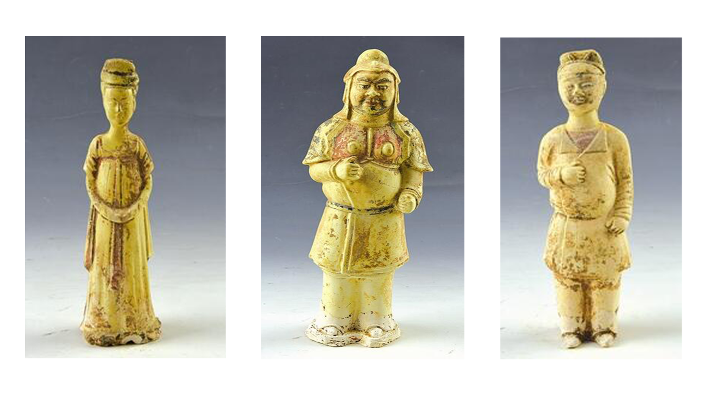

丝路漫漫，大河汤汤。
三门峡，这个古代被称为“陕地”“陕州”的地方，以其独特的区位优势，注定要在华夏民族绵绵不绝的历史中书写出浓墨重彩的篇章。
其东凭熊耳崤陵之险，西据桃林函谷要塞，北依滔滔黄河，南靠巍巍秦山，自古便是东通中原,西达关中、西域的丝路重要节点城市。优越的地理位置，适宜的气候条件，丰厚的自然资源，以及在这片沃土上生生不息的人们改造自然的拼搏精神，孕育了三门峡璀璨夺目的历史文明，为我们留下了宝贵的物质和非物质的财富。从夸父逐日、黄帝铸鼎、禹开三门的美丽传说，到召公问政、魏野跑驾、杨震“四知”传家的历史佳话；从仰韶村现代考古发端地，到庙底沟文化的华夏之花；从老子著经、达摩西归宗教哲学思想，到智慧人生的完璧归赵、白马非马；从终军弃繻的个人意志品质，到中流砥柱的中华民族精神；境内的1处世界文化遗产，10个（42处）国家重点文物保护单位，55处省级文物保护单位，102处市级文物保护单位，1013处县级文物保护单位，3412处文物点等丰厚遗产，都成为我们三门峡人今天以物知史，传播优秀传统文化，引领社会风尚，滋养道德力量，践行社会主义核心价值观的仰仗和启迪。
唐代的陕州，地处西京长安和东都洛阳之间，是水路陆路交会的水旱码头，也是丝路商人游走贩货的必经之路，往来客商如织，街旁店肆林立，一派繁华景象。近些年，河南省文物考古研究院和三门峡市文物考古研究所在我市发现发掘了上千座唐墓，出土了金、银、铜、玉、瓷、陶、三彩等近万件文物。近日，他们在市商务中心区某工地又发现了一座较为罕见的唐墓，出土了数十件唐瓷，是我市多年来少有的唐代考古新成果。现选发若干图片，以飨读者。
2017年6月至7月，为配合市商务中心区某工地基本建设，三门峡市文物考古研究所对该工地钻探出的古墓葬进行了抢救性发掘。其中一座墓葬出土30余件瓷俑，这是三门峡市首次发现如此多的瓷俑，殊为珍贵。
在墓室中部发现32件器物，其中瓷俑30件、瓷仓1件、瓷罐1件。就是如最上方所示的三件瓷佣。